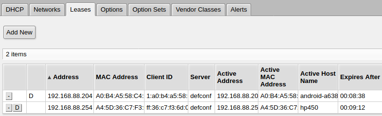

Веб-интерфейс роутера MikroTik hAP Lite настолько страшен и непоследовательно сделан, что пользоваться им сложно даже тем людям, которые до момента общения с этим "домашним" роутером могли без труда настраивать другие сетевые устройства. Разработчики роутера тоже с этим согласны (sic!), и поэтому советуют пользоваться утилитой WinBox или пройти курсы обучения по использованию командного режима. Проблема в том, что утилита WinBox доступна только под платформу Windows. Пользователи Linux и MacOsX должны довольствоваться web-интерфейсом.
Итак, задача: прописать соответствие IP-адресов и имен хостов домашней сети на DNS-сервисе, встроенном в роутер MikroTik. Казалось бы, что может быть прощще?
Тот, кто задавался этим вопросом, наверняка находили обсуждения, в котором утверждалось, что DNS-сервер в MikroTik на это неспособен. Возможно, так оно и было до некоторого времени, но в MikroTik с RouterOS v6.49 (stable) это сделать можно. Как минимум в пределах одного сегмента сети (а домашние сети обычно так и устроены).
Итак, что нужно сделать?
Во-первых, надо зафиксировать выдачу IP-адреса по MAC-адресу подключаемого устройства через DHCP-сервер. Для этого надо открыть меню:
IP - DHCP Server - Вкладка Leases (Аренда)
В этой вкладке будут видны подключенные в данный момент сетевые устройства и выданные им в аренду IP-адреса. (В аренду IP-адреса как раз и выдает DHCP-сервер).

Для понимания, столбец Active Host Name - это не DNS-имя устройства! Это имя, каким себя устройство само называет. Возможно, оно передается по протоколу WINS или WinBind, но это неточно.
В этом списке нужно нажать на строку с интересуемым устройством